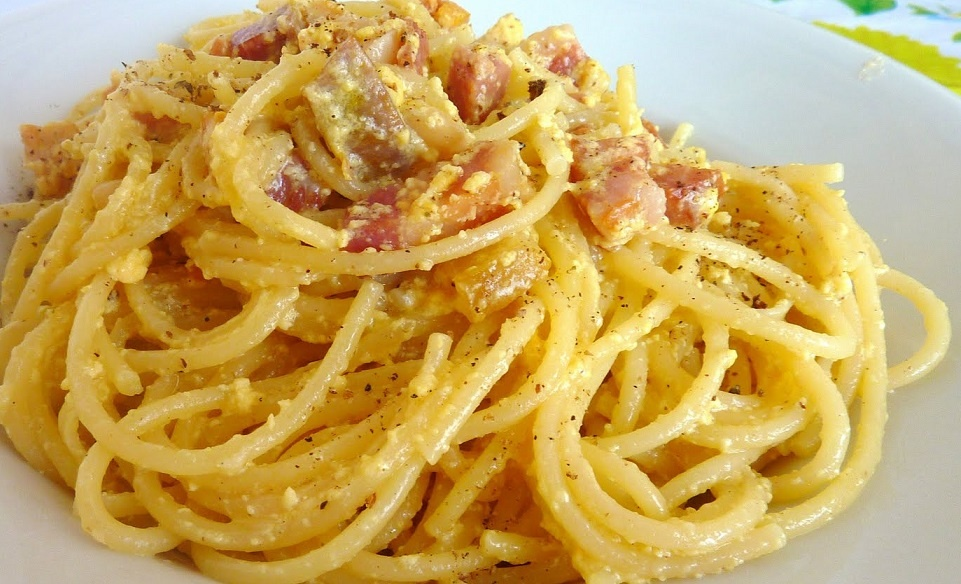

Spaghetti with Carbonara sauce is a traditional Italian dish. It is said the first "Carbonara" was made in the 1940s in a trattoria in Rome but the origins of this recipe are not totally clear. The most reliable story in fact relates the encounter between the ingredients available to the American soldiers and the imagination of a Roman cook. This prototype of "Carbonara" was made with eggs, bacon and cheese. Gradually the recipe evolved to the one we all know and love today!
The "Carbonara" sauce is easy to make and it can be prepared in just a few minutes. You will need just a few ingredients and follow these simple steps to prepare a tasty dinner!